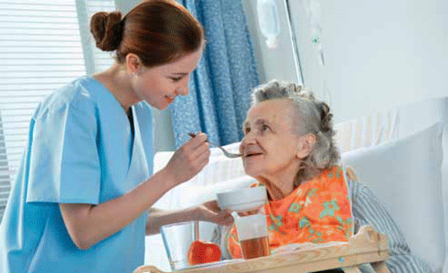

Expanded Nursing Uganda Explanation
Carry out Home visiting should be reviewed through safe maternal and newborn assessment, early recognition of danger signs, respectful communication and timely referral. Connect the definition to vital signs, bleeding, fetal or newborn wellbeing, patient education and local protocol requirements.
Contents — 14 sections (tap to expand)
01 HOME VISITING IN COMMUNITY HEALTH
Home visiting is highly essential to community health services, as a large number of patients are found in their homes.
Home visiting refers to the process of providing nursing care to patients at their residences.
02 Objectives of Home Visiting:
- Establish close relationships with the community and families.
- Assess the living conditions of families and identify how these conditions affect their health.
- Promote family health by providing health education tailored to the age and developmental stage of each family member.
- Monitor the skills learned during health education sessions.
- Demonstrate to families how to administer necessary healthcare to other family members.
- Refer families to appropriate specialized services when needed.
03 Factors Influencing the Growth of Home Visiting Services:
- Increasing elderly population facing chronic illnesses.
- Increased prevalence of HIV/AIDS.
- Advanced technology enabling home-based healthcare services.
- Rising cost of healthcare.
- Growing demand for consumer satisfaction.
04 Principles of Home Visiting:
When conducting home visits, community nurses should adhere to these essential principles:
- Purposeful and beneficial: Home visits should be planned with a clear objective and be beneficial to the patients.
- Needs-driven: The purpose of each visit should align with the specific needs of the patient.
- Beyond surveys and statistics: Home visits shouldn\’t solely rely on surveys or data collection but should incorporate health education and practical support.
- Regular and flexible: Visits should be scheduled regularly but adjusted according to the patient\’s needs.
- Educational: Home visits provide excellent opportunities for health education.
- Convenient and acceptable: Visits should be convenient for the patient and respect their preferences.
- Demonstrative: Home visits should provide nurses with the opportunity to demonstrate hygienic principles.
05 Effective Home Visiting Practices:
- Family-centered approach: The nurse should actively involve each family member in the care process.
- Positive relationships: Nurses and families should work collaboratively to build strong, trusting relationships that support goal achievement.
- Respect for patient autonomy: Nurses must respect the patient\’s right to accept or refuse care and participate in setting and reaching goals.
- Record-keeping: Home visits should be documented in the patient\’s medical records to ensure continuity of care.
06 Advantages of Home Visits:
- Provides an ideal setting for implementing the nursing process.
- Offers an opportunity to assess the home and family situation.
- Allows nurses to provide services in the patient\’s familiar environment.
- Facilitates strong relationships between nurses and families.
- Addresses family concerns and clarifies doubts.
- Enables nurses to observe family practices and the progress of care.
- Supports modification of care plans based on observations.
- Offers a viable option for patients unable or unwilling to travel.
- Creates a comfortable atmosphere for discussing concerns and needs.
07 Components of Home Visiting:
1. Initiation Phase: The community health nurse clarifies the source of referral for the visit, its purpose, and shares this information with the family.
2. Pre-visit Activities: Prior to the visit, nurses gather information about the family, including location, distance, address, and the reason for the visit. This may involve reviewing family folders, consulting other nurses or family members, or contacting health agencies. Information gathered may include age, sex, family structure, culture, values, problems, current care, etc. This information helps the nurse plan appropriately for the visit and address the patient\’s needs effectively.
3. Activities During Home Visits: Community health nurses use their skills to build rapport and trust with the family, which is crucial for a positive relationship. The nurse-patient relationship is vital for providing healthcare services in the community. The nurse introduces herself, establishes her professional identity, and builds the nurse-patient relationship. This relationship should be characterized by:
- One person possessing knowledge and skills that can benefit another.
- The needs of the person receiving assistance taking priority.
- The relationship being self-limiting based on the goals to be achieved.
- The person receiving assistance needing and utilizing the support.
- The assistance being provided competently. During visits, the nurse assesses the family\’s needs and plans nursing care accordingly.
4. Termination Phase: The termination of home visits occurs when:
- The nurse-patient goals are achieved, health is restored, and the patient can function without nursing assistance.
- The patient changes residence or moves to another care setting.
- The nurse transfers the patient\’s care to another nurse or caregiver.
5. Post-visit Activities: These include recording and reporting. The nurse documents important events within the family, reports necessary information to higher authorities, discusses family problems with colleagues and other health team members, and plans accurately to meet the family\’s needs.
08 Areas Associated with Home Visiting:
- General cleanliness
- Solid waste disposal
- Latrine/Toilet facilities
- Personal hygiene
- Infant vaccination (under 1 year)
- Women\’s vaccination
- Antenatal care
- Presence of insects or rodents in the home
- Feeding practices for children over 2 years old
- Family planning
- Presence of sick individuals in the house and actions taken.
09 Limitations of Home Visiting:
- Time-consuming
- Limited equipment can be transported to homes.
- Appointments may not be kept.
- Uncooperative or violent family members.
- Some homes may be geographically inaccessible.
- Language barriers.
10 Problems with Home Visits:
- Time and energy consumption: Community health nurses may spend a considerable amount of time traveling to and from homes, which can impact the time available for providing care.
- Non-acceptance: Families may not accept the nurse due to cultural differences, personal characteristics, or socioeconomic status.
- Language barriers: Communication difficulties can arise if the nurse is unfamiliar with the local language.
- Role confusion: Some individuals or families may not fully understand the role of a nurse in home visiting, leading to confusion about expectations.
11 Nursing Uganda Clinical Lens
Use Home Visiting as a practical nursing topic, not only a memorized definition. Move from individual illness to prevention, population risk, health education and continuity of care.
- What to understand first: define home visiting, identify the normal or expected pattern, then explain what changes when the patient is unwell.
- Why it matters in care: the nurse must recognize risk early, explain findings clearly, document accurately and know when to escalate.
- How to revise it: connect each point to assessment, nursing diagnosis or care problem, intervention, rationale and evaluation.
12 Assessment Guide
- Who is affected, where they live, risk factors, resources and barriers to care.
- Environmental hygiene, nutrition, immunization, water, sanitation and health-seeking behaviour.
- Community beliefs, leaders, household practices and surveillance data.
13 Nursing Priorities, Rationales and Outcomes
- Promote prevention, early detection, referral and community participation.
- Use clear health education matched to literacy, culture and available resources.
- Document findings and coordinate with community health structures.
The rationale for these priorities is patient safety: nursing actions should prevent deterioration, reduce discomfort, support recovery and create clear evidence for the next caregiver.
- Expected outcome: The community understands the message, risk is reduced and follow-up or referral pathways are active.
14 Patient Teaching and Revision Check
- Explain home visiting in simple language the patient or caregiver can repeat back.
- Teach warning signs, medicine or follow-up instructions, hygiene or lifestyle points where relevant.
- For exams, prepare a short answer using: definition, causes or risk factors, signs, assessment, management, complications and prevention.
- For ward practice, document baseline findings, actions taken, patient response and the plan for review.
Illustrations and Diagrams (1)

Related Video Lectures
Watch nursing lecture videos on YouTube for this topic. Opens in a new tab.
Watch on YouTubeExternal link: YouTube may use its own cookies and terms. Nursing Uganda is not affiliated with YouTube.